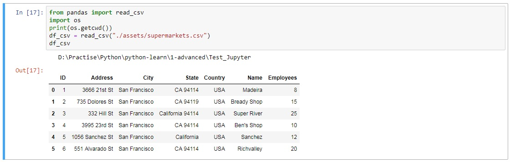

Info on 'Jupyter Notebooks'
In the command prompt :
- To Install : pip install Jupyter
- Then, cd directory
- Then, jupyter notebook
- Launches the Jupyter Interface in your Browser
- By default, a notebook server runs locally at 127.0.0.1:8888 and is accessible only from localhost. You may access the notebook server from the browser using http://127.0.0.1:8888
- Token or Password
- If no password has been configured, you need to open the notebook server with its login token in the URL, or paste it in the text-box. This requirement will be lifted if you enable a password
- You can get the token from command prompt
- More about enabling password is here
-
When a new Python3 Notebook is created, a file with '.ipynb' extension is created
A screenshot showing how data is represented in Jupyter
